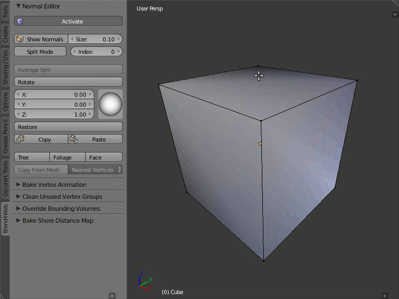
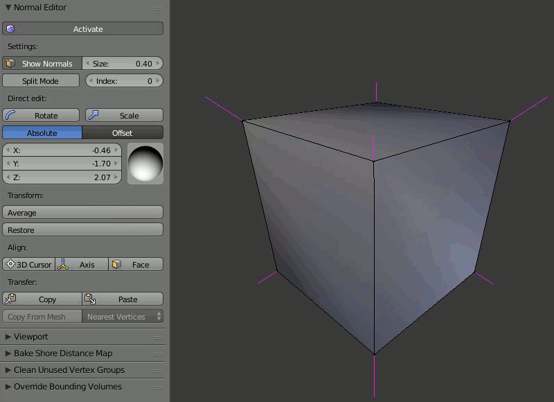

法线编辑器¶
目录
编辑法线来更改模型的著色而不更改其几何形状，是相当简单而有效的方法。
在某些情况下，使用法线编辑器，你可以做到这类似于使用 法线贴图 的效果。同等的，编辑法线是首选，因为它是更有效的计算和消耗更少的显存。
法线编辑器工作流示例：
左边-添加默认几何材质的树，右边-同一棵树但编辑过法线。
左边-普通着色的门，中间-带法线编辑的门，右边-带线框的门的几何形状。

左边-默认材质的草，右边-同样的草并编辑过法线。

左边-默认材质的眼镜，右边-编辑过法线的眼镜。
法线编辑器主要功能¶
Blender内的 datablock数据块（2.74版后可用）被用作于存储法线;
法线编辑和由此产生的材质在 Edit Mode（编辑模式）下显示;
所有更改应用全都立即自动保存;
可在 Viewport视图窗口 通过Shift+Ctrl+R热键可直接旋转顶点法线，就像任何其他Blender里的旋转;
编辑的法线会自动导出
界面¶
法线编辑器位于工具面板 Blend4Web > Normal Editor 上。开始编辑工作前 Shading: Smooth 模式应该启用和 Activate 按钮应该点击，或 自动Smooth 标志应在网格设置中启用。
启用¶
该 Activate 按钮打开顶点法线编辑模式。
编辑法线需要在编辑模式下Activate启用按钮。启用后，物体的材质和导出将使用编辑过的法线。换句话说，要在Blend4Web视图里查看根据材质的编辑后法线，此按钮必须处于启用状态。
显示法线¶
此按钮实际上重复原始Blender按钮。在窗口里打开显示法线，而 Size（尺寸） 栏允许您设置它们的长度。
您只要按下法线编辑器里的Show Normals按钮或Blender右侧面板中的Mesh Display（网格显示）里的法线显示。您也可以经由设置Size栏来调整合适的法线长度。
Rotate¶
使用这些工具，您可以更改法线的方向。Rotate（旋转）的功能也可通过 Shift+Ctrl+R热键，允许类似于Blender的顶点法线旋转。

选择您想要编辑的一个或多个顶点，然后使用圆形视觉操纵器指定他们的法线方向数值。
Rotate 按钮提供了更简便的方法来操纵法线。旋转在屏幕空间执行。然而，正如任何在Blender的其他旋转，您可在旋转过程中隔离所需的轴 (通过键入 X、 Y 或 Z)。
Scale¶
This function can be used to change the scale of the normals and is available both from the Tool panel and by pressing the Shift + Ctrl + S hot keys. The length of a normal can be set with numeric keys, while X, Y and Z keys are used to set the coordinate axis along which the normal is scaled.
注解
Keep in mind that the visible length of any normal never changes and is always defined by the Size parameter.
绝对和偏移模式¶
法线编辑器可以在两种不同的模式进行操作：绝对模式和补偿模式。当前选择的模式可以按已上述的``Rotate``按钮下放置在两个按钮中的一个进行切换。默认情况下，使用``Absolute``模式。

分割法线¶
Split Normals（分割法线）模式允许分别编辑每一面的顶点法线。Index索引栏允许您在分开的法线间切换。
打开Split Normals模式、 选择顶点并更改其法线方向。首先，索引为零的法线将被修改。接着，可以通过切换索引到下一个顶点法线并编辑它，下一步亦是如此。

{kind=link}
{kind=link}
{kind=link}
{kind=link}
{kind=link}
{kind=link}
{kind=link}
3D Cursor, Axis and Face¶
The 3D Cursor button directs the normals of the selected vertices away from the 3D cursor or toward it (if the Towards parameter in the Vertex Normal Cursor panel is enabled). The Axis button directs the normals of the vertices along a coordinate axis (the axis can be selected in the same Vertex Normal Cursor panel). The Face button directs the normals of the selected face parallel to the normal of this face.

In order to use the 3D Cursor function, select the desired vertices and place the 3D cursor in the desired position. Then click the 3D Cursor button so all the selected vertices will turn their direction away from the cursor, as if they were shot from one point. Then you may check the Towards option in the Vertex Normal Cursor panel, which will make the normals to turn in the direction of the cursor.
The Axis function is very easy to use: just select the vertices and press the button, so the function will direct their normals along the coordinate axis set in the Vertex Normal Cursor panel (Z axis is selected by default) or away from it, if you disable the Towards parameter on the same panel.
In order to direct the normals parallel to the face normal, just select the desired face (or several faces) and click the Face button. The normals of the vertices which form the face will be directed parallel to the face normal. This function works only with one selected face at a time.
The 3D Cursor, Axis and Face operators also possess the Factor parameter which is used to mix the initial position of the normals with the resulting position. The default value of this parameter is 1.0 (the resulting position is used).
Copy（复制）/Paste（粘贴）¶
拷贝一个到另从一个顶点的法线方向。

选择您想要复制的来源顶点后单击Copy按钮。接着选择您想要复制的顶点单击Paste按钮。您可从所选的顶点复制信息到许多不同的顶点上。此按钮在Split Mode不启用，亦无法复制分割顶点的数据。
{kind=link}